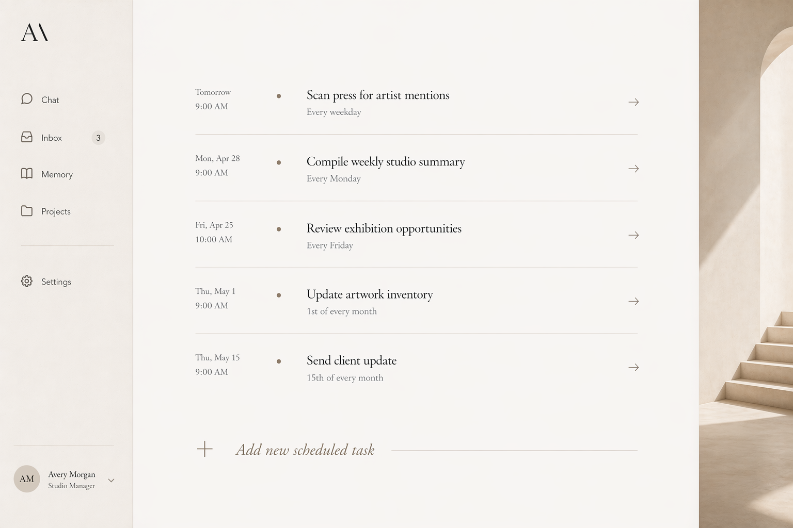

02 / Desktop
Lawless Desktop Assistant: 本地优先的企业法律/税务 agent
Desktop 版本解决的是企业税务场景里的本地授权和动作边界：assistant 可以整理邮件、来源和草稿，但不能越过专家审批去改变外部世界。

面向 Big Four / PwC 类税务邮件研究：读旧邮件和内部材料，准备带来源的中英文回复草稿。
EngineAdapter 控制工具可见性，artifact runtime 做 citation/source preflight，ActionGate 拦住 send/delete/archive 等外部动作。
内部测试把研究/起草压成 reviewer workflow；它不替代专家判断，也不自动发送对外邮件。

1. 为什么做：企业税务 assistant 首先要可信
企业税务邮件会影响真实客户沟通。assistant 可能需要读取 Outlook/M365 邮件、客户历史、内部 tax API、法规来源和 reviewer feedback；这些材料敏感，系统必须让专家确信：agent 只读授权材料、引用有来源、草稿可复核、外部动作不会自动发生。
桌面端必须把自由调用工具的风险先收住。读邮件和发邮件属于不同风险等级，生成草稿和对外承诺也属于不同风险等级。Desktop Assistant 因此把工具暴露、artifact 检查和动作审批作为一等工程对象。
2. 怎么做：用本地 harness 管住工具、证据和动作
EngineAdapter 决定 assistant 能看见哪些 MCP tool，哪些工具必须常驻，哪些工具只能作为搜索提示出现。邮箱动作被拆成 read/search/list、draft creation、send/reply/forward/delete/archive 等风险层级；信息读取可以在授权内运行，改变外部世界的动作会被 deny 或转入 ActionGate。
SubmitArtifact 把输出从聊天文本变成可检查对象。artifact-store 检查 citation、source id、claim source、draft recipient、mechanical issues 和 critic findings，再把 artifact 标成 ready、needs_attention 或 ready_with_warnings。专家看到的是带状态的草稿和证据包，复核从结构化状态开始。
scheduled task 让 assistant 能在后台整理 inbox 或准备草稿，同时保留可观察运行过程。scheduler 保存 live transcript、tool call、text delta、execution event 和 completion summary。用户回来时可以打开同一条会话接着看见任务轨迹。
3. 结果是什么：专家从空白邮件前移到复核界面
这套 desktop harness 的结果是把税务邮件研究从空白起草变成复核工作。内部 workflow test 中，30-40 分钟的整理和起草被压缩到约 2-3 分钟 reviewer workflow：专家面对已有上下文、来源和草稿，主要判断结论、语气和是否需要补材料。
验证覆盖真实 harness 行为。artifact runtime verification 覆盖 citation ready、unresolved citation、source mismatch warning、email draft missing recipient、forward/reply/modify-email 必须进入 ActionGate 等场景；MS365 tool policy 验证 Outlook 工具 allowlist；default-email-provider runtime 验证默认邮箱 provider fallback。
4. 边界：本地优先牺牲了一部分云端便利
Desktop Assistant 适合企业内部邮件、内部 API 和本地授权边界。跨境卖家需要低配置入口，所以 seller-facing patent/TRO 场景后来转向 cloud workspace。两者共享同一条 harness 判断：assistant 做准备、证据和草稿，高风险外部动作由人批准。
参考材料
- lawless-desktop-agent-foundry/src/desktop/main/engine-adapter.ts
- lawless-desktop-agent-foundry/src/desktop/main/artifact-store.ts
- lawless-desktop-agent-foundry/src/desktop/main/scheduler.ts
- lawless-desktop-agent-foundry/scripts/verify-artifact-runtime.mjs
- lawless-desktop-agent-foundry/scripts/verify-ms365-tool-policy.mjs